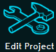
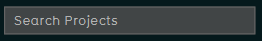
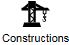
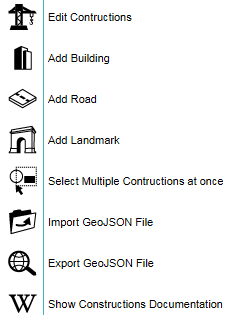
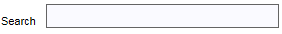

import logging;reload(logging) FORMAT="%(asctime)-8s %(message)s" logging.basicConfig(format=FORMAT, filename="test.log", level=logging.DEBUG) print"[info]===== Start test suite 4 =====" logging.info("[info]===== Start test suite 4 =====") runScript("./OS_Independant_Engine_Independant_ ReStart-160525-VVD-0.2.sikuli") runScript("./OS_Independant_LogOn-160419-VVD-0.5.sikuli") print"[info] Load project QA-menus-SikuliX..." logging.info("[info] Load project QA-menus-SikuliX...") wait(,15) click() paste(, "QA-menus-SikuliX") click() for x in range(0, 60): if exists(, x): print"[success] Project QA-menus-SikuliX loaded in %d seconds!" % x logging.info("[success] Project QA-menus-SikuliX loaded in %d seconds!" % x) break if not exists(, x): print"[error] Project QA-menus-SikuliX not loaded in %d seconds!" % x logging.error("[error] Project QA-menus-SikuliX not loaded in %d seconds!" % x) print"[info] Start testing Geo data tab..." logging.info("[info] Start testing Geo data tab...") click() print"[info] Start testing Constructions..." logging.info("[info] Start testing Constructions...") click() if not exists(): print"[error] Constructions dropdown menu did not appear as expected!" logging.error("[error] Constructions dropdown menu did not appear as expected!") exit() else: print"[success] Constructions dropdown menu appears as expected!" logging.error("[success] Constructions dropdown menu appears as expected!") print"[info] Add a building..." logging.info("[info] Add a building...") click() wait() click() paste(, "Gebouw") if exists(): print"[info] An empty building slot was added!" logging.info("[info] An empty building slot was added!") else: print"[error] No empty building slot was found!" logging.error("[error] No empty building slot was found!") exit(1) click()